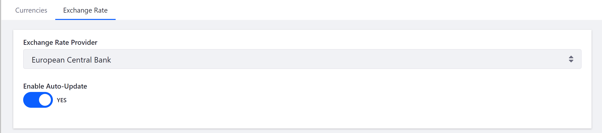
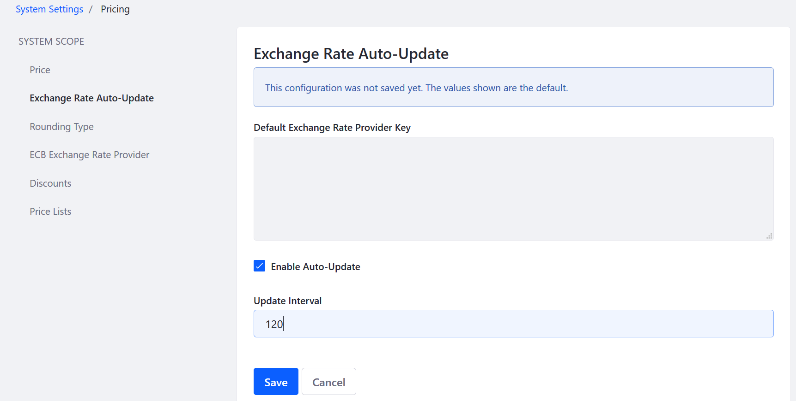

Managing Exchange Rates¶
By default, Liferay Commerce relies on the European Central Bank for foreign exchange rates. The ECB updates its exchange rates approximately every 24 hours; for more timely updates, a solution may be customized to use a different source.
To enable automatic currency conversion:
Go to the Control Panel → Commerce → Settings.
Click the Currencies tab.
Click the Exchange Rate screen.
Select European Central Bank from the Exchange Rate Provider dropdown menu.
Toggle the Enable Auto-Update radio button to Yes.

Click Save.
The store is now able to update automatically the currency conversion rate from the European Cental Bank. By default, the rates will be updated every 60 minutes.
To change the update interval:
Go to the Control Panel → Configuration → System Settings.
Click Pricing in the Commerce section.
Click Exchange Rate Auto-Update.
Enter a value in minutes: 120 (every 2 hours).
Check the Enable Auto-Update checkbox.

Click Save.
The Exchange Rate Auto-Update is now enabled and will update currency exchange rates every two hours.